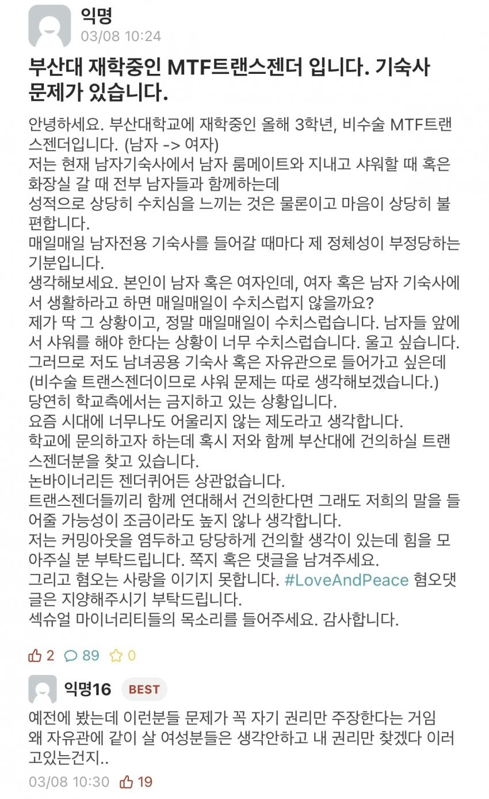

부산대 비수술 트렌스젠더 기숙사 문제
댓글
최소한 수술하고 법적으로 주민등록번호 바꾼다음에 권리 주장해라 ㅅㅂ ㅋㅋㅋ 그래도 욕먹는 마당에 뭔 양심이냐
비수술 트젠은 전신 이레즈미 정상인이랑 똑같은거 아님? ㅋㅋㅋㅋㅋ
성별정정을 한 것도 아니고 심지어 수술도 안했는데 어떻게 여자기숙사에 넣어줌..
고추가 달렸는데 왜 트젠이야. 전청조도 가슴 자르고 남장했는데 그정도 노력은 해야지
비수술이면 일단 수술하고 주장하자. 외형이 남자인데 같이 있을 여자들 배려하라고. 그거 싫으먼 자취해야지
꼬우면 기숙사 들어가지말고 자취를 해
책임은 싫고 권리는 얻고싶냐
개인이 방을 잡아야지 존나 개소리 길게적었네
나가살아 드러운 넘아
자취해 ㄷㄷ
음..러시아가 이런거 보면 좀 답인듯 일딴 패고 시작하더라... 그럼 정체성을 다시 찾더라
ㄹㅇㅋㅋ
나가살아 십새야
같은방 남자가 불쌍해 ㅠ 저런 ㅂㅅ이랑
트젠은 자기가 여자라고 생각하는거고 여자면 남자가 좋아야하는거아니가
트젠 혐오는 아니다만 그럼 니가 자취방을 얻는게 사람이 사는 도리 아니겠냐
자취를해 멍청한년아
ㅈㄴ더럽다 원룸찾아 알아서 꺼질생각은 안하고